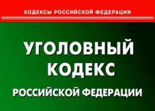

|
Документы для подачи на условно-досрочное освобождение ( УДО)

Основные документы для подачи на УДО:
1. Ходатайство от себя или адвоката, либо от законных представителей;
2. Копию приговора; - Копию приговоа обязательно выдают осужденному после суда. Очень часто осужденные ее выбрасывают или вырывают по необходимости страницыиз нее за кажущейся ненадобностью. Копия приговора необходима во всех случаях последующего обращения в суд (подача на УДО, на смягчение приговора, кассация, апелляция). В случае подачи документов в суд копию приговора не возвращают, поэтому необходим новый экземпляр. Как его получить новый экзмпляр копии приговора ?
а) ксерокопия в лагере с заверением у начальника колонии.
б) послать доверенность на получение родственникам . По такой доверенности они приговор получат без проблем
в) копию приговора может взять Ваш адвокат (для этого ничего не нужно вообще)
г) послать просьбу в суд, вынесший приговор, с просьбой прислать копию приговора.Вот здесь есть трудность. Копию могут прислать, а может вместо нее прийти отписка, что копия выдается бесплатно только один раз, во второй и последующие разы необходимо оплатить госпошлину во исполнение статьи 333.19 ч. 10 Налогового Кодекса РФ (при подаче заявления о повторной выдаче копий решений, приговоров, судебных приказов, определений суда, постановлений президиума суда надзорной инстанции, копий других документов из дела, выдаваемых судом, а также при подаче заявления о выдаче дубликатов исполнительных документов - 2 рубля за одну страницу документа, но не менее 20 рублей).
3. Справка о состоянии здоровья (выписка из медицинской книжки) - подается в случае серьезного заболевания или расстройства здоровья. Справка выдается лечебным органом лагеря.
4. Заявление о признании вины (если отрицал на суде, не помешает подать и, если, вина была признана еще на суде)
5. Для имеющих исполнительный лист (то есть для тех, в отношении кого возбуждено исполнительное производство): - заявление осужденного о том, что он просит администрацию ИК ежемесячно перечислять из заработанных средств денежную сумму в счет погашения материального ущерба по исполнительному листу - справка их бухгалтерии колонии о том, что средства перечисляются потерпевшему (с указанием конкретных сумм помесячно), если все выплачено, то в справке должно быть указано, что иск погашен
Дополнительные документы для УДО:
1. Справка о трудном материальном положении. Берется в собесе, свидетельствует о необходимости наличия кормильца в семье
2. Справка о беременности (Берется в гинекологии).
3. Справка о наличии несовершеннолетних детей (Достаточно копии свидетельства о рождении, заверенной нотариусом).
4. Справка о трудоустройстве или гарантийное письмо от работодателя (Гарантия о трудоустройстве может быть оформлена в виде справки от работодателя).
5. Справка из ЖЭКа о прописке или обязательство зарегистрировать по месту жительства
6. Характеристика от соседей, заверенная в ЖЭКЕ и участковым
7. Характеристика с предыдущих мест работы
8. Справка о состоянии здоровья родителей, иждивенцев - Берется в районной поликлинике, служит доказательством о необходимости ухода.
9. Выписка о пенсии из пенсионного фонда (для родителей)
10. Ходатайства от любых предприятий, общественных организаций, партий и т.д.
11. Свидетельство о браке - Берется в ЗАГСе. Обязательно заверяется нотариально.
12. Справка из ВУЗа что учится или что учился с характеристикой (в том случае, если учился недавно)
Документы для подачи на условно-досрочное освобождение( УДО ):
Основные документы для подачи на УДО :
1. Ходатайство об УДО от себя или адвоката, либо от законных представителей
2. Копия приговора, заверенная и прошнурованная
3. Справка о состоянии здоровья (выписка из медицинской книжки) - подается в случае серьезного заболевания или расстройства здоровья.
4. Заявление о признании вины .
5. Для имеющих исполнительный лист - справка их бухгалтерии колонии о том, что средства перечисляются потерпевшему (с указанием конкретных сумм помесячно), если все выплачено, то в справке должно быть указано, что иск погашен, если деньги в погашение иска перечислялись родственниками, то справку о перечислении денег. Если было выплачено все сразу наличными – то расписка потерпевшего о возмещении ему ущерба (заверенная нотариально)
Дополнительные документы для подачи на УДО :
1. Справка о трудном материальном положении
2. Справка о беременности
3. Справка о наличии несовершеннолетних детей
4. Справка о трудоустройстве или гарантийное письмо от работодателя
5. Справка из ЖЭКа о прописке или обязательство зарегистрировать по месту жительства | Образец обязательства предоставить жилье
6. Характеристика от соседей, заверенная в ЖЭКЕ и участковым
7. Характеристика с предыдущих мест работы
8. Справка о состоянии здоровья родителей, иждивенцев
9. Выписка о пенсии из пенсионного фонда (для родителей)
10. Ходатайства от любых предприятий, общественных организаций, партий и т.д.
11. Свидетельство о браке
12. Справка из ВУЗа что учится или что учился с характеристикой (в том случае, если учился недавно)
Ряд документов оформляется самой администрацией исправительного учреждения:
Справка о заработной плате за время отбывания наказания.
|